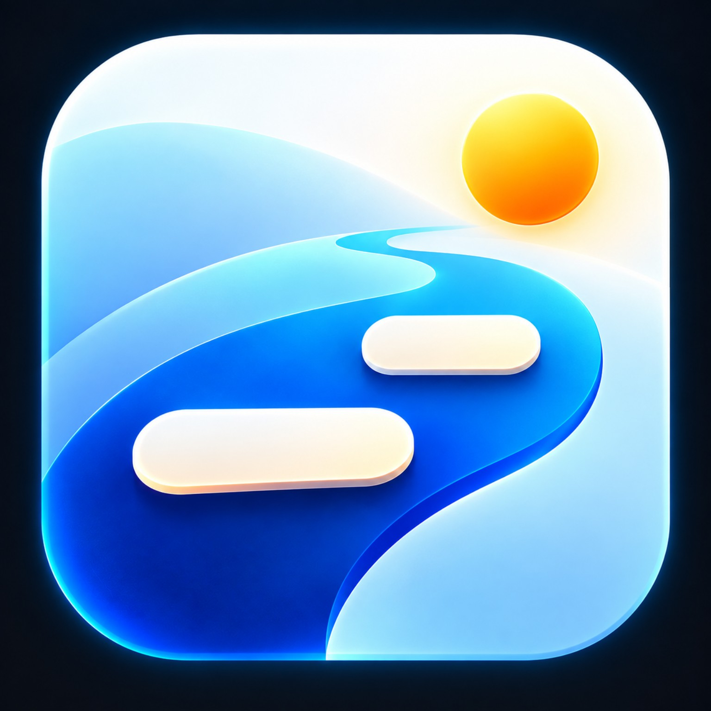
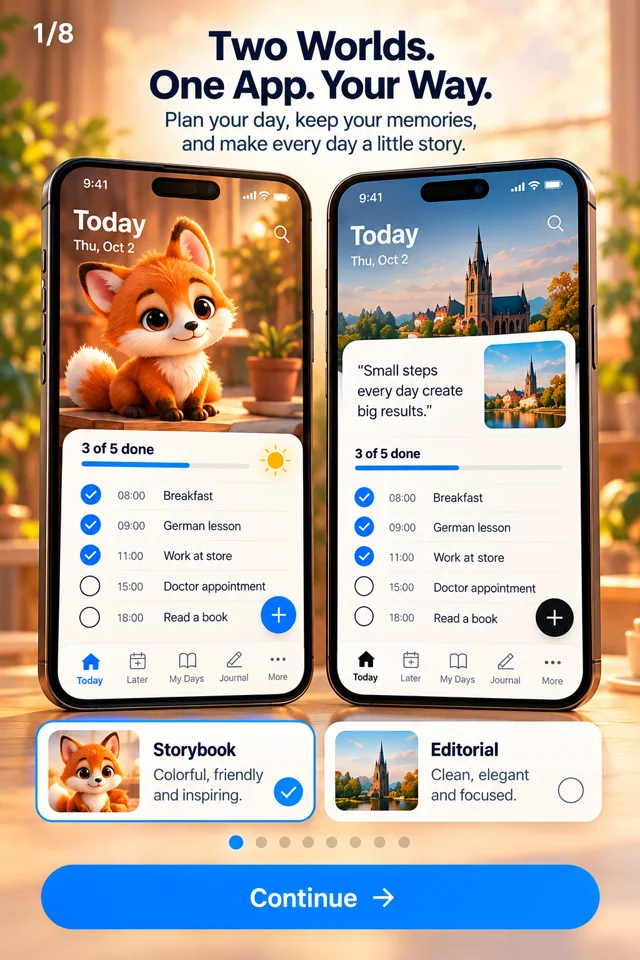

Today & Later
Add tasks by typing or speaking. Set dates, times, reminders and repeats. Due tasks appear in Today.

Daily PlannerPlan your tasks. Remember your days. Keep your story.
In development · iPhoneEnglish design previews. The app is being built in Turkish and English.

Add tasks by typing or speaking. Set dates, times, reminders and repeats. Due tasks appear in Today.
Look back at your completed tasks and daily progress. Keep a record of your days.
Add your own notes and photos to a day. Search your memories when you want to return to them.
A warm, colourful theme with a little fox companion.
A calm, clean theme with a focus on your plans and notes.
Both themes use the same tasks and journal. Change your theme in Settings.
$4.99
$39.99
Daily Planner is being developed. The features shown here describe the planned app; it is not yet available on the App Store. A download link will appear after release.
The first version is planned in Turkish and English. Further languages will follow after development.
Upcoming apps